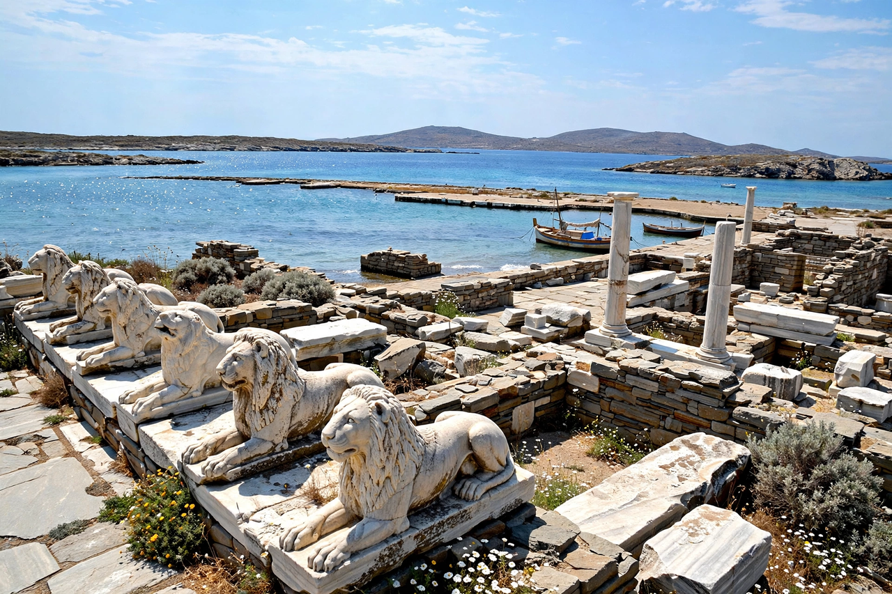

| Delian League | |
|---|---|
 | |
| Formation | 478 BC |
| Dissolved | 404 BC |
| Headquarters | Delos (until 454 BC), then Athens |
| Hegemon | Athens |
| Purpose | Defence against the Achaemenid Empire |
The Delian League was a confederacy of Greek city-states, numbering between 150 and 330, founded in 478 BC under the leadership (hegemony) of Athens, whose purpose was to continue fighting the Persian Empire after the Greek victory in the Battle of Plataea at the end of the Second Persian invasion of Greece. The league's name derives from its official meeting place, the island of Delos, where congresses were held in the temple and where the treasury stood until, in a symbolic gesture, Pericles moved it to Athens in 454 BC.
After the Persian Wars, the Spartan regent Pausanias alienated the Ionian allies by his arrogance, and the allies asked Athens to take the leadership of the continuing war against Persia. Aristides assessed the contributions of the members: some supplied ships, others money (phoros), assessed initially at some 460 talents a year. Members swore oaths of perpetual alliance, symbolised by lumps of iron sunk in the sea.
Under the Athenian general Cimon, the league won victories such as the Battle of the Eurymedon (c. 466 BC). Gradually Athens converted the league into an Athenian empire: allies who tried to secede, such as Naxos (c. 470 BC) and Thasos (465 BC), were besieged and reduced to subject status. Tribute replaced ships as the normal contribution, and Athens used league funds to build the Parthenon and other monuments.
The league became the Athenian side in the Peloponnesian War against Sparta and the Peloponnesian League. After Athens' catastrophic defeat in 404 BC, the league was dissolved. A Second Athenian League was formed in 378 BC, on terms designed to avoid the abuses of the first.